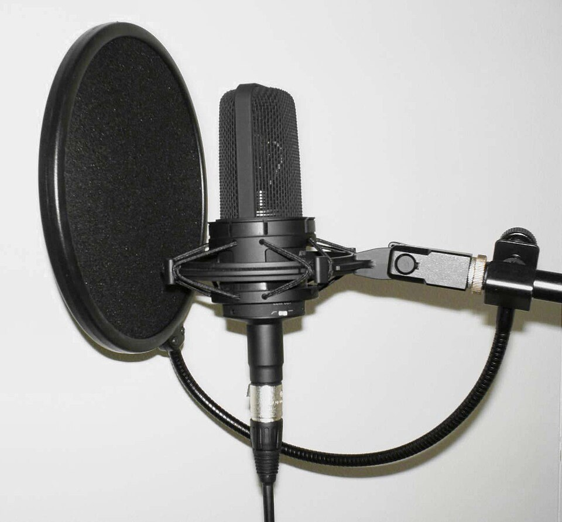
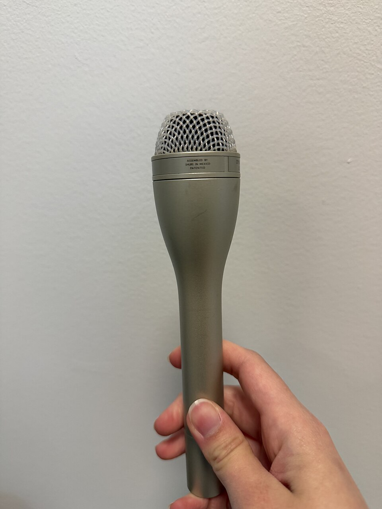
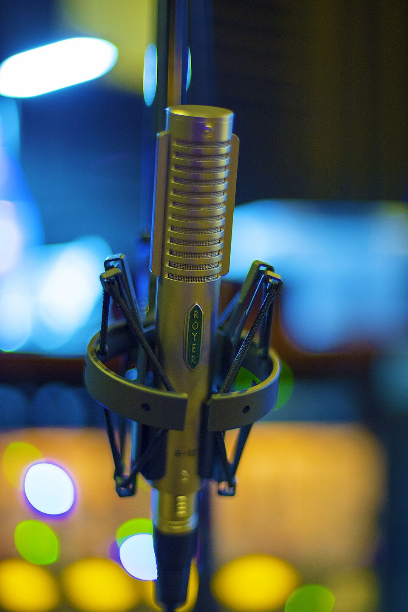
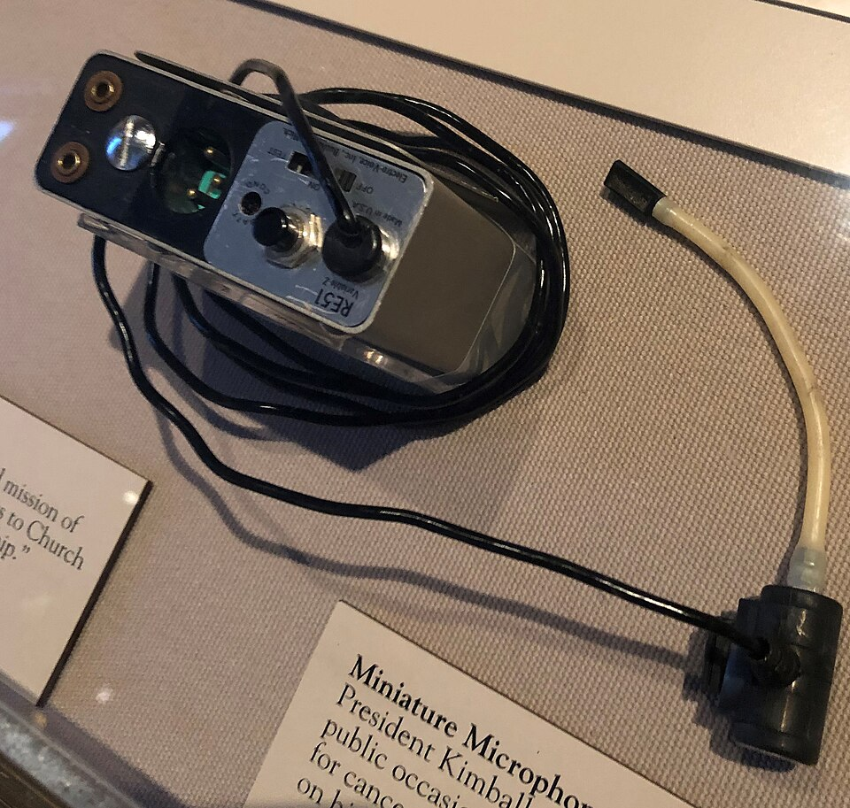

X/Y (coincident)
Two cardioids with capsules stacked vertically, angled 90–135°. Level differences only—collapses to mono cleanly.
A polar pattern is directional behavior—not a body style. Two microphones can look alike and respond very differently, and multi-pattern studio condensers switch patterns electronically. Confirm every mic's pickup pattern from its housing switch or spec sheet.

Side-address condenser. Many fixed-pattern studio condensers use cardioid pickup. Speak into the marked front—never the top—and place loudspeakers behind the 180° rear null.
Author-released public domain · Wikimedia Commons ↗
Shure SM61. An omni responds to scalar pressure at one side of its diaphragm. It has no rear null, low handling noise, and zero directional proximity bass boost.
CC0 public-domain dedication · Wikimedia Commons ↗
Royer R-121. Sound hits both faces of its thin aluminum ribbon. Front and rear pick up equally with opposite polarity, while equal side pressure creates razor-sharp ±90° nulls.
CC0 public-domain dedication · Wikimedia Commons ↗Boom-mounted shotgun. Acoustic slots along the interference tube delay off-axis sound so side frequencies cancel before reaching the capsule—effective outdoors, risky near hard ceilings.
U.S. State Department · Public domain · Wikimedia Commons ↗Wireless replaces one cable with an RF link—the signal chain stays identical. The capsule captures audio, the bodypack modulates RF, and the receiver outputs line/mic audio to your console. See Wireless RF Coordination →

Locks capsule distance at 2–3 cm off the mouth corner while the actor dances and turns, feeding a bodypack transmitter.
CC0 public-domain dedication · Wikimedia Commons ↗
Each diversity receiver tracks its assigned RF frequency and feeds balanced audio down XLR into one mixer channel.
CC0 public-domain dedication · Wikimedia Commons ↗Stereo pairs preserve ensemble width using level differences (coincident angles) and/or time differences (spaced capsules). Check how multi-mic spacing creates comb filtering in the .
Two cardioids with capsules stacked vertically, angled 90–135°. Level differences only—collapses to mono cleanly.
Two cardioids 17 cm apart at 110°. Blends level and ear-width time cues; wide, natural, and popular for choirs.
Two omni mics spaced a few feet apart. Airy and spacious, but least mono-safe—always check mono sum.
Two figure-8s coincident at 90°. Front lobes capture ensemble; rear lobes capture hall ambiance.
Cardioid Mid + Figure-8 Side. Decode Left = M + S, Right = M − S; adjusts stereo width after recording with zero mono cancellation.